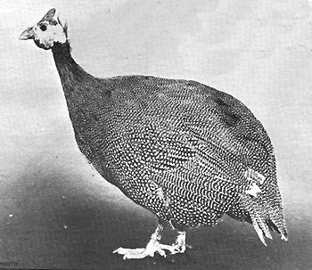

When Grandma's chickens patrolled the farmyard they were usually accompanied by one or more guineas that acted as sentries and look-outs.
"Guineas warn when hawks are about," explained Grandma. "And a screaming guinea will frighten off almost any hawk or fox that tries to steal a chicken"
She might have added that a clutch of guineas, all screaming at once, would frighten off most two-legged trespassers also . . . for the raucous screeching of these otherwise modest and shy-appearing birds easily equals that of the Beatles in their prime.
The guinea is a native of Africa and several species are found in the west coast country of Guinea from which they get their name.
In their native habitat these game birds are highly prized by hunters since a mature guinea will average three pounds in weight and provides excellent eating. Guineas are sometimes used to stock shooting preserves in England and it can be little more than an oversight that similar efforts have not been made in this country.
A great deal of patience as well as large sums of money have been spent in attempts to introduce exotic and oriental pheasants into the U.S. While these efforts have met sensational success in the plains areas of Kansas, Nebraska, South Dakota and Wyoming, they have failed dismally in establishing the game birds in the brushy, second-growth woodlands that cover millions of acres in the Ozarks, Appalachians, and elsewhere. These sections where pheasants have failed to survive would seem to be ideally suited for the large-scale introduction of guineas. In fact, it is in this area and around a few of the larger cities that most of today's guineas are now found . . . either as a few birds on the small family farms or in larger numbers raised for a specialty market.
Guineas have been domesticated for many centuries, and were raised as table birds by the ancient Greeks and Romans. They were brought to this country by the early colonists but wild turkeys, pigeons and other game birds were so plentiful that guineas were kept largely as a curiosity and for for their watch-dog value. They could not compete with chickens in egg production or as a convenience food, however, for guineas demand a measure of independence and refuse to accept the poultry yard confinement of chickens. They prefer to roam over a large territory, rustle their food from lodge grain, weed seeds, grasshoppers and other insect and shun the barnyard and chicken-run.
It is for these reasons we feel certain that guineas could be profitably used to stock wilderness areas and hunting or game preserves. A brace of two or three-pound guineas make a satisfying trophy for most hunters and guineas could be undomesticated and hunted in the wild like quail, pheasant or grouse. This would certainly be a more humane and satisfying procedure than raising them in captivity to be released for shooting like the pigeons and ducks now offered by many preserves. There are other possibilities for profit in raising guineas that will occur to TMEN readers. Growers near large cities have worked up profitable mar kets for young guineas to be served in gourmet restaurants, night clubs and flossy hotels in exotic ways such as "game birds under glass." At twelve to thirteen weeks a well-grown, tender young guinea will weigh an average of one and a half to two pounds dressed and will bring a premium price of two dollars per bird and tip. The meat is darker than chicken, with a distinct game flavor much enjoyed by those with educated palates.
Guinea production on an extended scale presents some problems which do not confront the chicken, duck or turkey grower. Guineas make very poor mothers, hiding their nests with unusual cleverness and laying a clutch of fifteen or twenty eggs before beginning to brood. The hen is erratic about brooding and may desert her nest for little or no reason. When the first two or three chicks hatch, she may desert the remaining eggs and take her young off on long ranges through the dew-wet grass where the little ones sicken or become lost while the chicks in the unhatched eggs die a-borning.
vTo circumvent this, the guinea producer must keep careful watch on the birds during the egg-laying period to discover the hidden nests. He then removes all but one or two marked eggs. In many cases this will induce the hen to continue laying up to thirty and sometimes as many as a hundred eggs before she becomes broody. The eggs are then placed in an incubator or given to a setting bantam or chicken hen who will hatch them and care for the young guineas-which are properly called "keets"-can be raised in confinement like chicken broilers until they are twelve to thirteen weeks old and ready for market.
When raised by a chicken mother, the guinea keets recognize their own kind and return to their free-ranging natural parents as they approach maturity. Rarely will they confuse their heritage and cross with chickens, but in the few instances when this has occurred the hybrids have been sterile.
Unless the keets are raised in confinement as described, there may be difficulty in catching them when ready for market. Guineas dislike close confinement and prefer to roost in trees even when they roam with the poultry flock during the day. It is because of this persistent atavistic trait of wildness that un-domesticating the guinea would seem to offer the back-to-the-land enthusiast so many possibilities for success and profit.
|
 |
|
|